ClearFlo Case Study January 14-16 2012
Contents
Site information
META_SITES
'name' 'lon_WGS84' 'lat_WGS84' 'start' 'end'
'KSK' '-0.1161' '51.51146' '2006233' '2100001'
'KSK15S' '-0.11687' '51.51177' '2006233' '2100001'
'KSS' '-0.11635' '51.512' '2009274' '2012086'
'KSS45W' '-0.11608' '51.51133' '2009274' '2100001'
'KSN' '-0.1158' '51.5116' '2010101' '2100001'
'KSM' '-0.1154' '51.5112' 'NA' '2100001'
'BTT' '-0.1392' '51.52187' 'NA' '2100001'
'RGS' '-0.17492' '51.501517' '2009085' '2100001'
'TLI' '-0.11768' '51.50975' '2010094' '2100001'
'GL' 'NA' 'NA' 'NA' 'NA'
'NK' '-0.2134' '51.521055' '2011033' '2100001'
'EMB' '-0.1217' '51.5081' '2010173' '2100001'
'TEM' '-0.113' '51.5112' '2010173' '2100001'
'HAN' '-0.1438' '51.5139' '2011011' '2100001'
'MR' '-0.154566' '51.522528' '2011068' '2100001'
'NDT' '-0.1796' '51.4814' '2011144' '2100001'
'MT' '-0.1113' '51.5116' '2011163' '2100001'
'KSNW' '-0.115947' '51.512195' '2011284' '2100001'
'NGT' '-0.115947' '51.512195' '2011284' '2100001'
'KSSW' '-0.116722' '51.511794' '2012090' '2100001'
'NTT' '-0.115947' '51.512195' '2011284' '2100001'
'KSE' 'NA' 'NA' '2012148' '2012277'
'WMT' 'NA' 'NA' '2012150' '2012277'
'KSC' 'NA' 'NA' 'NA' '2100001'
'SJP' '-0.12948' '51.5042' '1981001' '2100001'
'UCL' '-0.131' '51.524' '2009001' '2011001'
'KSB' '-0.115947' '51.512195' '2013063' '2100001'
'LCY_EGLC' '0.07579' '51.5208' '2012001' '2100001'
'IML' '0.62231' '51.3134' '2013213' '2100001'
'IMU' '0.062045' '51.313482' '2013207' '2100001'
Annual plots
PlotsJan1416_V1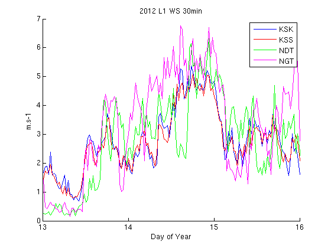 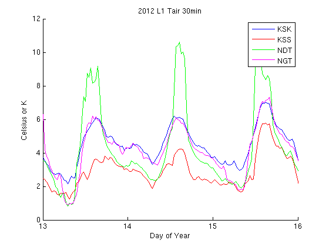 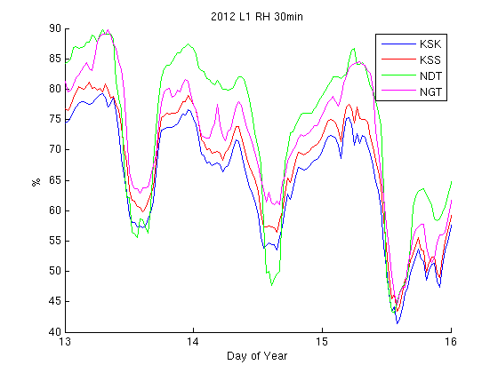 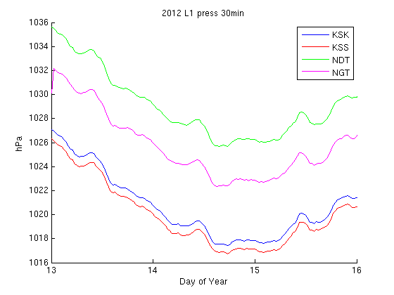 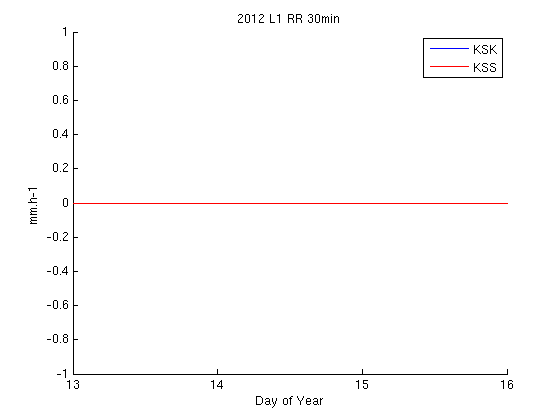 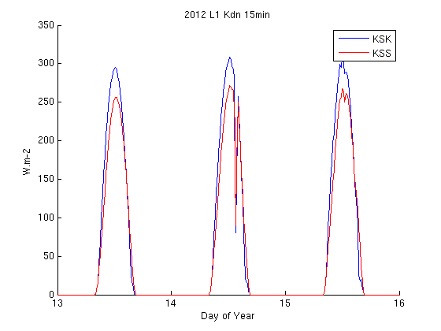 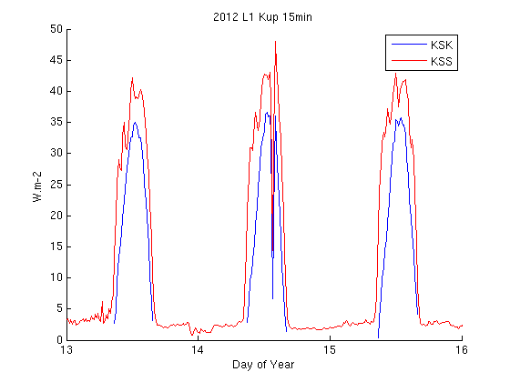 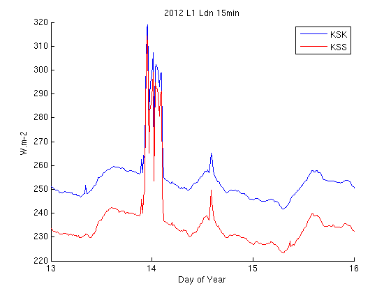 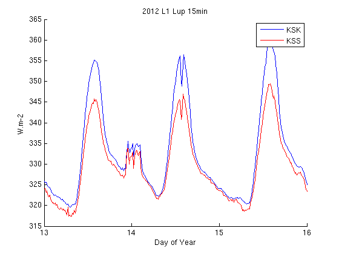 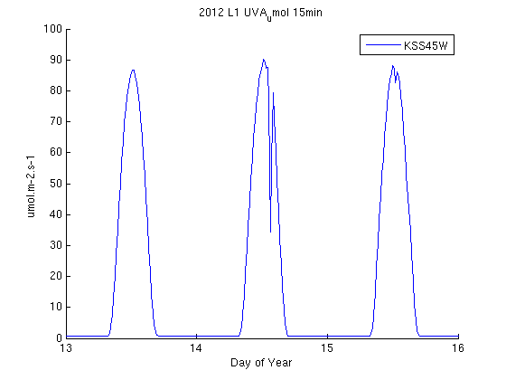 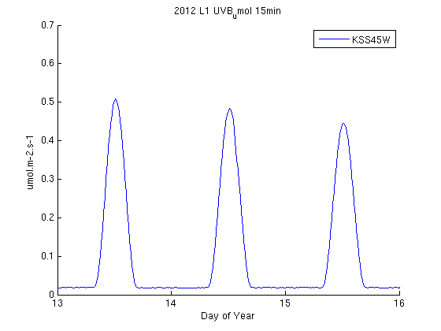 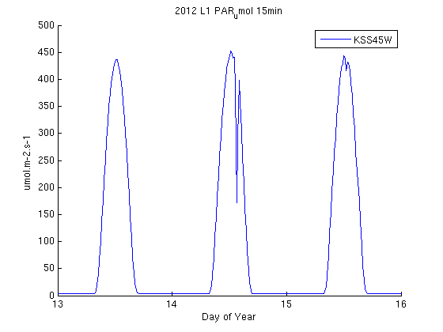 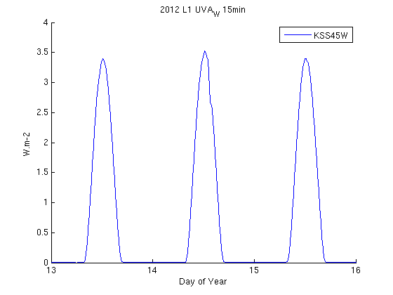 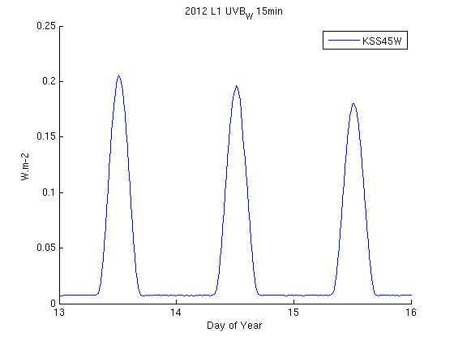 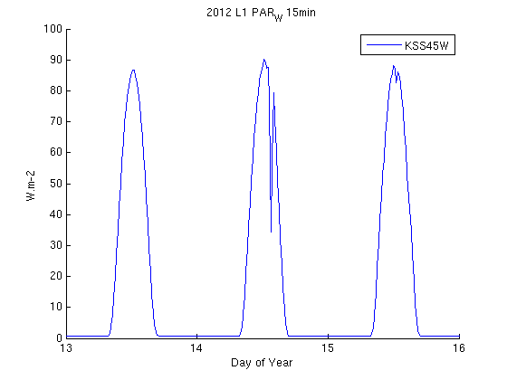
Wind rose plots
WXT L0 data: direction in degrees, wind speed in m.s-1
WindJan1416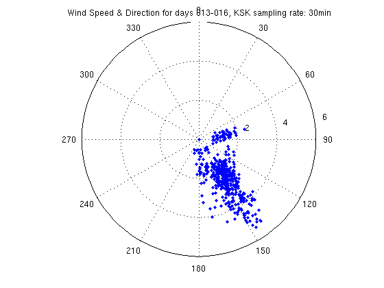 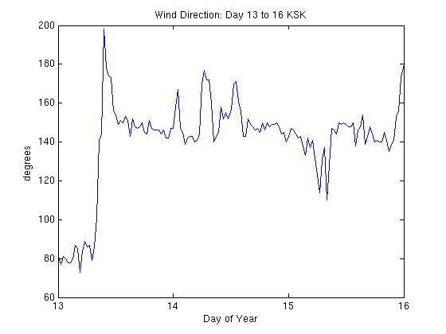 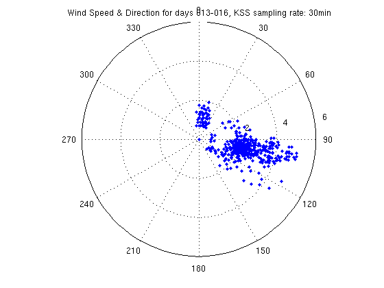 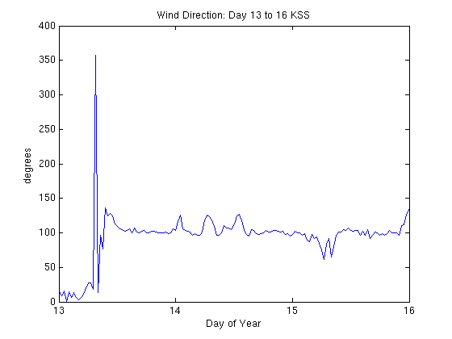